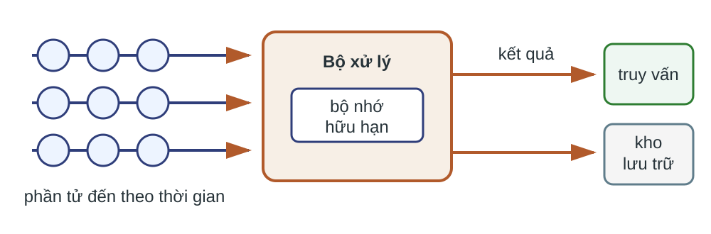
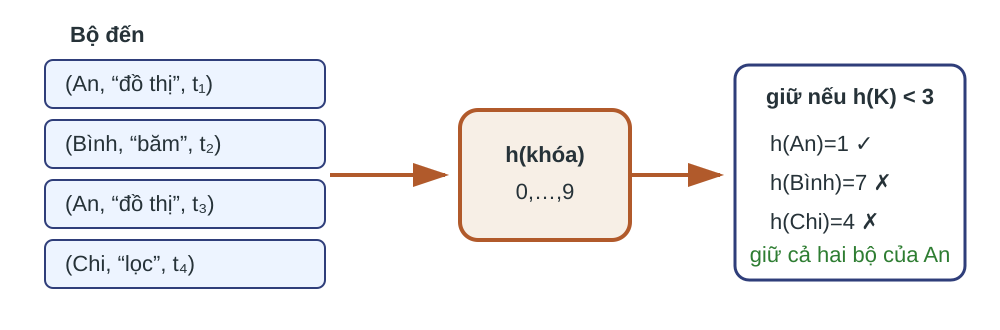
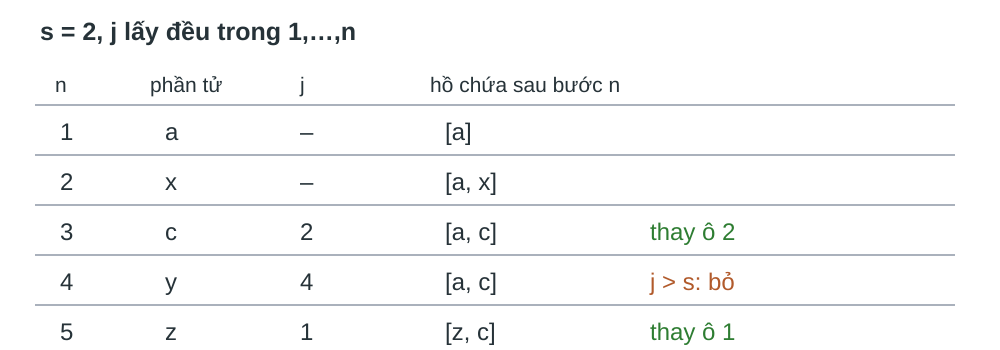
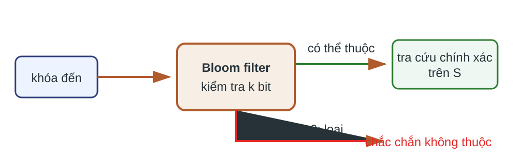
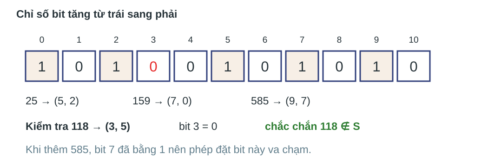

Trường Đại học Công nghệ · Đại học Quốc gia Hà Nội
Dòng truy vấn không có điểm kết thúc
Dữ liệu đến
Các bộ (người dùng, truy vấn, thời gian) theo thứ tự thời gian.
Kết quả cần có
Mẫu đại diện để phân tích truy vấn lặp; bộ lọc để loại sớm khóa không thuộc tập cho phép.
Không biết trước độ dài dòng; bộ nhớ làm việc không thể giữ toàn bộ lịch sử.
Câu hỏi: Giữ ngẫu nhiên 10% từng bộ có bảo toàn tỷ lệ truy vấn lặp của mỗi người dùng không?
Kết quả học tập
Đặc tả
Nêu đầu vào, trạng thái, đầu ra và giới hạn một lượt của mô hình dòng.
Chứng minh
Giải thích tính nhất quán theo khóa và bất biến $s/n$ của hồ chứa.
Định cỡ
Tính mật độ bit, xác suất dương giả và số hàm băm của Bloom filter.
Mô hình dòng dữ liệu

Hợp đồng của thuật toán dòng
Đầu vào
Dãy bộ $x_1,x_2,\ldots$ đến tuần tự; độ dài có thể chưa biết.
Trạng thái và đầu ra
Trạng thái hữu hạn cập nhật khi mỗi bộ đến; mẫu, quyết định lọc hoặc thống kê.
Mỗi bộ phải được xử lý trước khi dòng tiếp tục quá xa.
Không giả định có thể quét lại toàn bộ tiền tố.
Chi phí khác với dữ liệu tĩnh
Đại lượng
Câu cần trả lời
Bộ nhớ
trạng thái tăng theo ngân sách nào, có tăng theo độ dài dòng không?
Cập nhật
mỗi bộ đến cần bao nhiêu phép băm, phép gán và truy cập bit?
Lượt quét
thuật toán cần một lượt hay phải đọc lại lịch sử?
Sai số
xác suất hoặc đại lượng nào chỉ được xấp xỉ?
Ba sản phẩm cần ba trạng thái khác nhau
Mẫu theo khóa
Một hàm băm cố định quyết định toàn bộ bộ có cùng khóa.
Hồ chứa
Một mảng đúng $s$ vị trí đại diện đều cho các vị trí đã thấy.
Bloom filter
Mảng bit trả lời “chắc chắn không” hoặc “có thể thuộc”.
Chọn cấu trúc theo truy vấn
Câu hỏi: Chọn cấu trúc cho: (i) giữ trọn lịch sử của 10% người dùng; (ii) giữ đúng 1.000 bộ trong tiền tố hiện tại; (iii) loại nhanh địa chỉ chắc chắn không thuộc danh sách cho phép.
Sản phẩm: tên cấu trúc và một câu nêu trạng thái phải lưu.
Lấy mẫu theo khóa giữ quan hệ giữa các bộ
Dòng truy vấn có nhiều lần xuất hiện của cùng người dùng và cùng truy vấn. Lấy độc lập từng bộ phá vỡ quan hệ lặp.
Lấy độc lập từng bộ tạo sai lệch
Một người dùng có $x$ giá trị truy vấn phân biệt xuất hiện một lần và $d$ giá trị truy vấn phân biệt xuất hiện hai lần.
Tỷ lệ cần ước lượng
$\displaystyle \frac{d}{x+d}$
Tỷ số từ số đếm kỳ vọng trong mẫu 10%
$\displaystyle \frac{d}{10x+19d}$
Tỷ số thứ hai không phải kỳ vọng chính xác của một tỷ số ngẫu nhiên.
Một khóa nhận một quyết định cố định

Đặc tả mẫu tỷ lệ $a/b$
Đầu vào
Bộ $t$ có khóa $K(t)$; số nguyên $b\ge1$, $0\le a\le b$; $h:\mathcal K\to\{0,\ldots,b-1\}$.
Quy tắc
Chọn $h$ ngẫu nhiên từ một họ băm gần đều, rồi giữ $t$ khi và chỉ khi $h(K(t))<a$.
Một hàm $h$ đã chọn được giữ cố định cho toàn bộ dòng.
Thuật toán không cần bảng quyết định khóa
LẤY-MẪU-THEO-KHÓA(t, a, b, h) K ← khóa_của(t) nếu h(K) < a: phát t vào dòng mẫu ngược lại: bỏ t
Điều kiện trước: $a,b$ thỏa K03 và $h$ cố định. Điều kiện dừng: xử lý đúng một bộ.
Tính đúng là tính nhất quán theo khóa
Mệnh đề. Với $b\ge1$, $0\le a\le b$ và hàm $h$ cố định, mọi bộ có cùng khóa đều được giữ hoặc đều bị bỏ.
Lập luận. Nếu $K(t)=K(t')$ thì $h(K(t))=h(K(t'))$; hai phép so sánh với cùng $a$ cho cùng kết quả.
Nếu $h$ được chọn từ họ băm đều, xác suất theo phép chọn $h$ để một khóa cố định được giữ là $a/b$.
Khóa đi theo đơn vị thống kê
Đơn vị cần giữ trọn
Xác định đối tượng mà thống kê sẽ gộp nhiều bộ.
Thuộc tính nhận diện
Chọn đủ thuộc tính để nhận diện duy nhất đối tượng đó.
Kiểm tra
Hai bộ của cùng đối tượng phải nhận cùng quyết định.
Câu hỏi: Nếu thống kê cần toàn bộ truy vấn của một người dùng, khóa phải nhận diện đối tượng nào?
Chi phí thấp không đồng nghĩa mẫu có kích thước cố định
Chi phí mỗi bộ
Một phép băm và một phép so sánh; trạng thái quyết định khóa là $O(1)$ ngoài dữ liệu mẫu.
Giới hạn
Mẫu tăng theo số bộ của các khóa được chọn. Khóa “nặng” có thể chiếm nhiều bộ nhớ.
Kiểm tra mẫu theo khóa
Câu hỏi: Hàm $h$ ánh xạ vào $\{0,\ldots,99\}$. Muốn chọn 20% khóa, điều kiện nào đúng: $h(K)\le20$ hay $h(K)<20$? Mẫu này bảo đảm điều gì khi một khóa xuất hiện một triệu lần?
Hồ chứa giới hạn số vị trí được giữ
Khi dòng chưa biết độ dài và bộ nhớ chỉ chứa $s$ bộ, sau $n\ge s$ phần tử cần giữ đúng $s$ vị trí, mỗi vị trí có xác suất biên $s/n$ được giữ.
Hai phép lấy mẫu không thay thế nhau
Theo khóa
Hồ chứa
Đơn vị chọn
giá trị khóa
vị trí trong dòng
Kích thước
tăng theo bộ của khóa chọn
$\min(n,s)$
Tính nhất quán
cùng khóa cùng quyết định
không bảo đảm
Xác suất sau $n\ge s$
$a/b$ cho mỗi khóa
$s/n$ cho mỗi vị trí
Vết chạy với $s=2$

Các số $j$ là một lần chạy minh họa, không phải xác suất bảo đảm.
Đặc tả theo tiền tố hiện tại
Đầu vào
Dòng vị trí $1,2,\ldots$; ngân sách nguyên $s\ge1$; bộ sinh số ngẫu nhiên đều, độc lập.
Điều kiện sau
Nếu $n<s$, giữ cả $n$ vị trí. Nếu $n\ge s$, giữ đúng $s$ vị trí và mỗi vị trí có xác suất biên $s/n$.
Một số ngẫu nhiên quyết định nhận và chỗ thay
HỒ-CHỨA(xₙ, n, s, S) nếu n ≤ s: S[n] ← xₙ ngược lại: j ← số nguyên đều trong {1,…,n} nếu j ≤ s: S[j] ← xₙ trả S
Bất biến của hồ chứa
Mệnh đề. Sau khi xử lý $n\ge s$ vị trí, hồ chứa có đúng $s$ phần tử và mỗi vị trí $i\le n$ có xác suất $s/n$ nằm trong hồ chứa.
Cơ sở $n=s$: giữ cả $s$ vị trí, nên xác suất là $1=s/s$.
Bước quy nạp: xét riêng vị trí mới và mỗi vị trí cũ.
Phần tử mới có xác suất đúng
Ở bước $n+1$, phần tử mới vào hồ chứa khi $j\le s$:
$$\Pr[x_{n+1}\in S]=\frac{s}{n+1}.$$
Đây là xác suất đích cho một trong $n+1$ vị trí.
Phần tử cũ sống sót với xác suất $n/(n+1)$
Điều kiện phần tử cũ đang trong hồ chứa, nó bị thay với xác suất
Vì vậy $\Pr[i\in S\text{ sau bước }n+1]=\frac{s}{n}\cdot\frac{n}{n+1}=\frac{s}{n+1}$.
Bộ nhớ cố định đổi lấy ngẫu nhiên theo vị trí
Chi phí
$\Theta(s)$ bộ nhớ; $\Theta(1)$ thời gian mỗi phần tử trong mô hình RAM, nếu sinh số nguyên đều và truy cập mảng là $O(1)$.
Kiểm tra
Với $s=100,n=1.000$, xác suất một vị trí cụ thể còn lại là bao nhiêu? Điều gì hỏng nếu bộ sinh số ngẫu nhiên thiên lệch?
Bloom filter loại phần lớn khóa không thuộc
MMDS xét tập $S$ gồm một tỷ địa chỉ thư điện tử được phép và ngân sách một gigabyte, tức tám tỷ bit. Mỗi thư đến cần được lọc trước phép tra cứu đĩa.
Mảng bit là cổng trước phép tra cứu đắt

Ví dụ 11 bit cho thấy va chạm
$h_1(x)$ lấy các bit ở vị trí lẻ từ phải của biểu diễn nhị phân; $h_2(x)$ lấy các bit ở vị trí chẵn. Giữ thứ tự từ bit có trọng số cao xuống thấp, rồi lấy modulo 11.

Đặc tả bộ lọc thành viên xác suất
Trạng thái
Mảng $n$ bit ban đầu bằng 0; tập $S$ có $m$ khóa; $k\ge1$ hàm băm vào $\{0,\ldots,n-1\}$.
Trả lời
“chắc chắn không thuộc” hoặc “có thể thuộc”. Kết quả thứ hai cần phép kiểm tra chính xác nếu quyết định không được sai.
Xây dựng bằng $km$ lần đặt bit
XÂY-BLOOM(S, n, h₁,…,hₖ) B[0…n-1] ← 0 với mỗi khóa x trong S: với i = 1,…,k: B[hᵢ(x)] ← 1 trả B
Va chạm không tạo ô mới; đặt lại bit 1 không đổi trạng thái.
Truy vấn dừng sớm khi gặp bit 0
KIỂM-TRA-BLOOM(x, B, h₁,…,hₖ) với i = 1,…,k: nếu B[hᵢ(x)] = 0: trả “chắc chắn không thuộc” trả “có thể thuộc”
Trường hợp xấu dùng $k$ phép băm và $k$ lần đọc bit.
Giữ nguyên dữ kiện và yêu cầu của Bài tập 4.2.1, 4.3.1, 4.3.2 và 4.3.3.
Mỗi nhóm nộp một phiếu gồm khóa lấy mẫu, phép tính xác suất và lập luận tối ưu.
Bài tập 4.2.1: chọn khóa lấy mẫu
Dòng có lược đồ Grades(university, courseID, studentID, grade). Mỗi mã học phần và mã sinh viên chỉ duy nhất trong một trường. Với mẫu $1/20$, xác định khóa cho:
số sinh viên trung bình trong một học phần của mỗi trường;
tỷ lệ sinh viên có điểm trung bình từ 3,5;
tỷ lệ học phần có ít nhất nửa số sinh viên đạt A.
Sản phẩm: ba khóa, mỗi khóa kèm một câu giải thích.
Bài tập 4.3.1: ba và bốn hàm băm
Bloom filter có $n=8$ tỷ bit và tập $S$ có $m=1$ tỷ khóa. Tính xác suất dương giả khi:
$k=3$
$k=4$
Sản phẩm: hai phép thế số và hai kết quả.
Bài tập 4.3.2: chia mảng bit
Giả sử $k\mid n$. Chia $n$ bit thành $k$ mảng, mỗi mảng $n/k$ bit; mỗi khóa băm một lần vào từng mảng bằng các hàm đều, độc lập.
Tính xác suất dương giả theo $n,m,k$.
So sánh với $k$ hàm băm vào một mảng chung.
Sản phẩm: công thức theo $n$ hữu hạn, dạng xấp xỉ và kết luận.
Bài tập 4.3.3: chọn số hàm băm
Với $n$ bit và tập $S$ có $m$ phần tử, tìm số hàm băm tối thiểu hóa